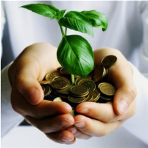

Qu’est-ce que le DD Le développement durable est un concept souvent difficile à appréhender dans son ensemble. Cette appellation regroupe de nombreuses approches, visions et sensibilités. Nous vous fournissons ici quelques clés pour en connaître les grands principes, enjeux et acteurs La définition la plus reconnue ... est celle de Gro Harlem Brundtland, ministre norvégienne qui a présidé en 1987 la rédaction du rapport « Notre avenir à tous » sous la direction des Nations Unies. Ce rapport a défini la notion de développement durable, qui constitue encore aujourd'hui la définition la plus commu nément admise : "Le développement durable est un mode de développement qui répond aux besoins des générations actuelles sans compromettre la capacité des générations futures à répondre aux leurs." Rapport Brundtland, 1987. La citation d’Antoine de Saint Exupéry est aussi souvent reprise pour synthétiser les enjeux du développement durable : "Nous n’héritons pas de la Terre de nos parents, nous l’empruntons à nos enfants." Une pique de Jean Yanne, artiste et critique des travers et des ridicules de son époque, caricature bien la situation actuelle : "Tout le monde veut sauver la planète, mais personne ne veut descendre les poubelles!"
